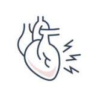
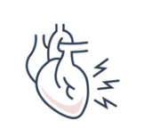

Number of Deaths by Risk Factor
United States
 


Three dacades ago...
The leading cause of death worldwide and in the U.S. was smoking. Over the course of the 20th centrury, it killed around 100 million people worldwide. In the U.S. half million people died of smoking in 1990. The remaining leading causes of death in America are diet related. High blood pressure is the second most prevalent killer among our citizens. Poor diet leads to high cholesterol, obesity and high blood sugar which killed nearly 1.3 million americans in 1990. But let's see how the statistics change over the next three decades...
■Increesed since 1990 ■Decreesed since 1990